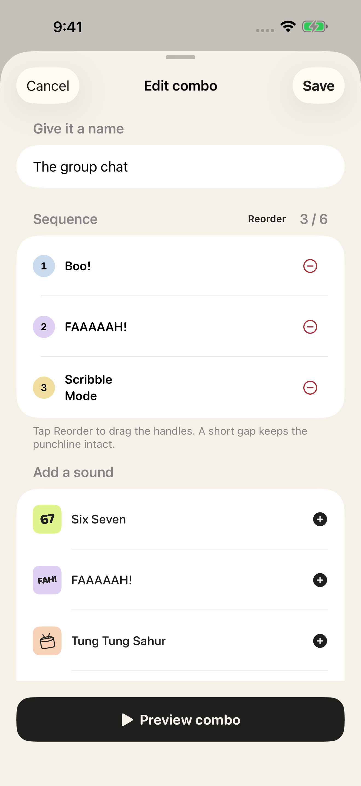

01 / CREATE
Build the punchline.
Combine two to six original sounds, repeat your favorites, reorder them, and preview your terrible idea.
Arrange original spoken jokes and effects into your own audio punchline. Preview it, save it, and send the actual sound to your group chat.
For iPhone · Free · Works offline
Combine two to six original sounds, repeat your favorites, reorder them, and preview your terrible idea.
Name and save your Combos. Keep favorites nearby and edit your creations whenever inspiration strikes.
Your iPhone renders a WAV file locally. Share a finished Combo or an individual reaction through Apple's share sheet.